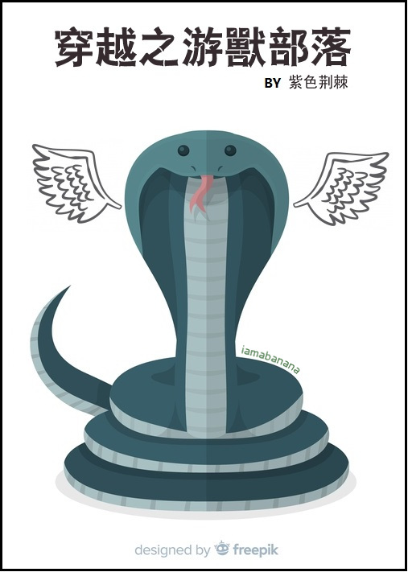

Lin Mu fue empujado por el acantilado, pero no murió y llegó a un mundo mágico.
Una enorme pitón con alas y capacidad de volar. Muy bien, piénselo como el legendario Dios Serpiente Maya;
Un ciempiés gigantesco que puede volar en el cielo, bueno, lo ha visto antes en “Viaje al Oeste”;
Un lobo enorme y poderoso con un cuerpo tan enorme como el de un elefante, es decir, piénselo como un mutante;
..
Aunque los animales frente a él eran un poco extraños, seguían siendo animales. ¿Por qué todos ustedes de repente se convirtieron en humanos? Al encontrarse con bestias salvajes, Lin Mu aún podía aceptarlo, pero al encontrarse con '*yāojing', Lin Mu se convirtió... emocionado en su lugar. ¿Qué? Ustedes son los infames hombres bestia vagabundos. No sé nada sobre eso. ¿Cometieron muchos crímenes atroces? Yo tampoco veo eso.
Y así, Lin Mu comenzó una vida dura pero satisfactoria construyendo una casa en otro mundo.
*Yāojing/妖精 no tiene una palabra equivalente en inglés adecuada. El significado más cercano sería “ser sobrenatural” o “Yokai” (japonés).